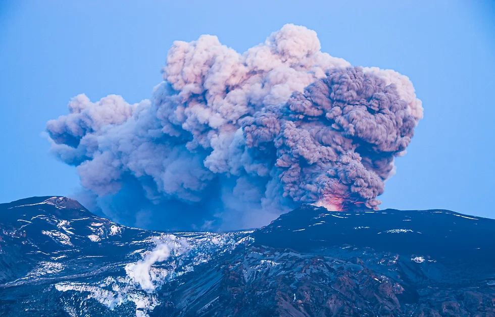

Paisagens Naturais
A Islândia é um dos lugares mais impressionantes do mundo em termos de paisagens naturais. Sua localização sobre a Dorsal Mesoatlântica faz com que a ilha tenha intensa atividade geotérmica e vulcânica, além de enormes geleiras e fiordes que esculpem cenários espetaculares.
Vulcões
A Islândia tem cerca de 130 vulcões ativos e inativos, sendo conhecida como a "terra do fogo e do gelo". Alguns dos mais famosos incluem:
Eyjafjallajökull – Vulcão que entrou em erupção em 2010 e causou o fechamento do espaço aéreo europeu.
Hekla – Um dos vulcões mais ativos da Islândia, conhecido como "Portão do Inferno" na Idade Média.
Fagradalsfjall – Recentemente entrou em erupção em 2021, atraindo turistas para ver o espetáculo da lava fluindo.
Geleiras
Cobrindo cerca de 11% do território islandês, as geleiras são um dos maiores atrativos do país. Algumas das mais importantes são:
Vatnajökull – Maior geleira da Europa, cobre vulcões ativos e tem cavernas de gelo incríveis.
Langjökull – Onde turistas podem fazer passeios em túneis de gelo.
Sólheimajökull – Fácil acesso e popular para caminhadas guiadas.

Fiordes
A Islândia possui belos fiordes, principalmente na região dos Fiordes do Oeste (Westfjords) e no leste do país. Essas formações geológicas criam paisagens impressionantes, com montanhas íngremes, vilarejos remotos e cachoeiras majestosas.
Geysir – O gêiser que deu nome a todos os outros no mundo, embora esteja inativo atualmente.
Strokkur – Próximo ao Geysir, entra em erupção a cada 5-10 minutos, lançando jatos de água fervente a 20-30 metros de altura.
Lagoa Azul (Blue Lagoon) – Uma das fontes termais mais famosas do mundo, localizada em um campo de lava.